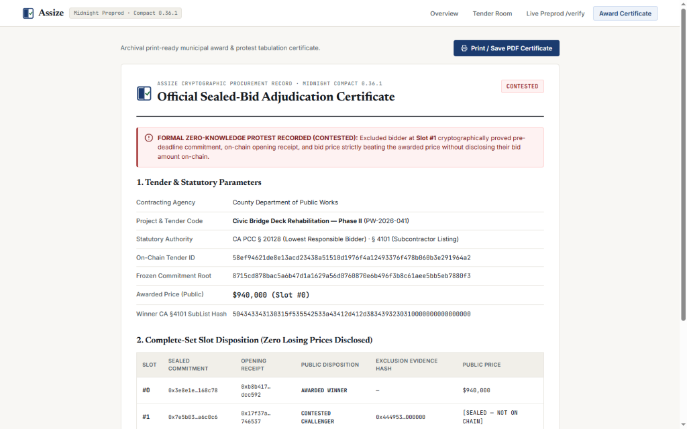

Assize is a Midnight-native cryptographic procurement ledger built in Compact 0.36.1. Losing contractor prices stay confidential against rivals, the public, and blockchain observers forever—while zero-knowledge proofs prevent silent omission, rigged awards, and unchallenged pretextual exclusions.
| Metric | Guarantee |
|---|---|
| Privacy Boundary | Confidential vs. rivals, public & chain; adjudicator decrypts post-deadline |
| Completeness | Frozen commitment root & count consumed exhaustively by proveAward |
| ZK Protest | Excluded bidder proves myPrice < awardedPrice without revealing price |
Governments spend 12–13% of GDP on public contracts. Today they must choose between two broken models.
Publishing every losing bid and unit price allows cartels to instantly detect and punish defectors, exposes sensitive contractor cost structures, and violates commercial confidentiality norms (EU Dir. 2014/24/EU Art. 21).
Corrupt officials silently omit lower bids, alter rankings, or pretextually disqualify an outside low bidder as "not responsible" to steer contracts to incumbents—leaving excluded bidders unable to prove harm without leaking their own bid.
Assize enforces confidentiality against competing bidders, the public, and blockchain observers across every phase, while keeping the authorized procurement adjudicator cryptographically accountable after the deadline.
| Actor | OPEN (Pre-Deadline) | REVEAL (Post-Deadline) | AWARDED / FINALIZED | CONTESTED (ZK Protest) |
|---|---|---|---|---|
| Competing Bidders | See only opaque commitments & nullifier count | See only sha256 delivery receipts | See winner's price & reason codes; zero losing prices | See challenger slot & ZK proof only; price stays hidden |
| Public & Chain Observers | See frozen parameters, prequal root & commitments | See frozen commitment root & receipt flags | Verify complete-set ZK award proof; zero losing prices | Verify CONTESTED state & evidence hashes |
| Authorized Adjudicator | Sees ZERO plaintext bids (no envelopes delivered) | Decrypts off-chain WebCrypto RSA-OAEP/AES-GCM envelopes | Must prove exhaustive complete-set proveAward | Bound by public on-chain exclusion code & evidence hash |
| Excluded Low Bidder | Holds private bid witness & Merkle path | Anchors on-chain deliverOpening receipt | Inspects public exclusion reason code & awarded price | Proves myPrice < awardedPrice in ZK; flips tender CONTESTED |
Assize requires a single execution environment where private witnesses never touch public state, yet public state transitions are gated by zero-knowledge proofs over the complete bid set.
| Circuit | Phase Transition | Zero-Knowledge & Completeness Enforcement |
|---|---|---|
| submitSealedBid | OPEN -> OPEN | Proves depth-5 prequalRoot Merkle membership, unique nullifier, price > 0, and bondAmount ≥ 10% without revealing bidder identity or price. |
| closeBidding | OPEN -> REVEAL | Permissionless freeze of frozenBidCount & frozenCommitRoot (or CANCELLED_NO_BIDS if 0 bids). |
| deliverOpening | REVEAL -> REVEAL | Proves bidder owns commitment preimage & anchors off-chain WebCrypto envelope sha256 receipt on-chain. |
| closeReveal | REVEAL -> EVALUATION | Locks reveal window cleanly before adjudication, preventing early-cutoff races. |
| proveAward | EVALUATION -> AWARDED / NO_AWARD | Consumes all N=4 frozen slots: blocks silent omission, enforces deterministic lowest compliant bidder + tie-break, proves OVER_BUDGET, blocks fake NON_REVEAL. |
| challengeAward | AWARDED -> CONTESTED | Discretionarily excluded receipted bidder proves myPrice < awardedPrice in ZK without disclosing their price. |
| finalizeAward / declareAdjudicatorDefault | AWARDED -> FINALIZED EVALUATION -> DEFAULT |
Locks uncontested awards permanently, or records permissionless adjudicator default if evaluation stalls. |
Adjudicator tries marking Slot #1 ($885k) as NO_BID to award $940k.
Adjudicator includes all 4 bids but awards Slot #0 ($940k) over Slot #1 ($885k).
Adjudicator tries claiming receipted Slot #1 failed to reveal its opening.
When a corrupt official marks Slot #1 NOT_RESPONSIBLE with a public evidence hash and awards Slot #0 ($940,000), Slot #1 executes challengeAward: proving pre-deadline commitment, on-chain receipt, and myPrice < $940,000 in zero knowledge. The ledger flips permanently to CONTESTED—preserving administrative due process (City of Inglewood) without ever exposing Slot #1's $885,000 cost structure to competitors.

Assize enforces strict separation between local compiled runtime execution (clearly labeled in the Tender Room for walletless judge evaluation) and live Midnight Preprod state (queried directly via Blockfrost's https://midnight-preprod.blockfrost.io/api/v0 GraphQL indexer and reproducible via .github/workflows/deploy-preprod.yml + midnightntwrk/proof-server). Zero fabricated tx hashes; zero setTimeout simulations.